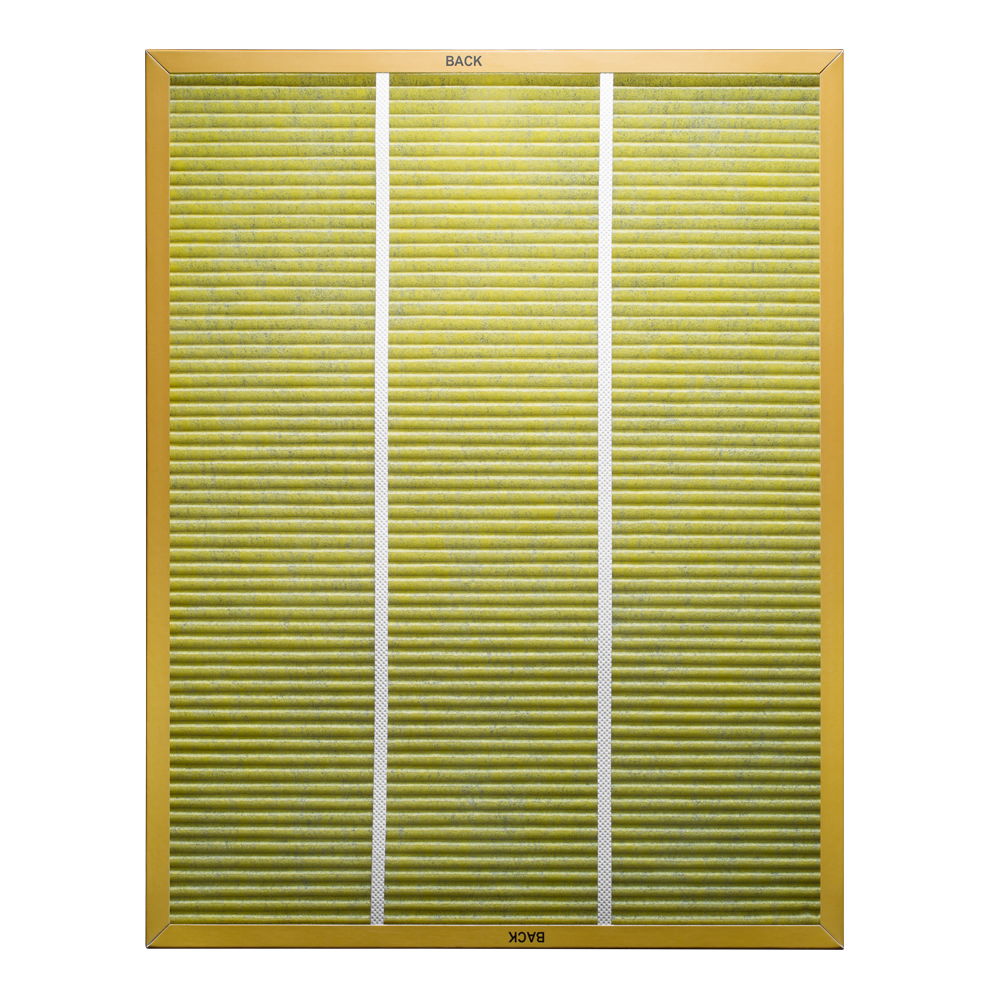

Фильтр LEGIONER AS ACLN 3006 FP
Важная разработка для очищения воздуха в помещениях с системами вентиляции и кондиционирования.
Legioner
Специальный фильтр LEGIONER был разработан компанией BORK для направленной борьбы с бактериями легионеллы, которые находятся в системах вентиляции и кондиционирования воздуха. Данный вид бактерий приводит к различным заболеваниям респираторной системы, самым распространенным проявлением которых является тяжелая форма пневмонии. Специальный фильтр LEGIONER особенно необходим в летний период, когда во многих домах и офисах активно используются различные системы кондиционирования и вентиляции. Фильтр LEGIONER имеет особую запатентованную пропитку, содержащую Гуанидиновые соединения, которая позволяет убивать бактерии легионеллы в воздухе, проходящем через фильтр. Данные соединения обладают широким спектром биоцидного действия и эффективны против большинства патогенных микроорганизмов, вызывающих гнойные, респираторные, кишечные и др. заболевания, включая туберкулез. Противолегионеллезный эффект гуанидинов доказан исследованиями НИИЭМ им. Н.Ф. Гамалея (центр, сотрудничающий с Всемирной Организацией Здравоохранения) по контролю легионеллеза. Промышленные испытания биоцидных красок в НИИ Трансплантологии и искусственных органов, а также на Черкизовском молочном заводе показали, что их применение обеспечивает высокий уровень санитарно-гигиенической защиты в течение длительного времени.
Полигуанидин – и препараты на его основе, экологически чистые дезинфекторы.
Гарантия чистоты и свежести
Специальный фильтр разработан для борьбы с бактериями, находящимися в системах вентиляции и кондиционирования воздуха, и особо актуален в летний период. Система предназначена для эффективной работы воздухоочистителей A500, A501, A700, A704 и A800 в течение 6 месяцев.